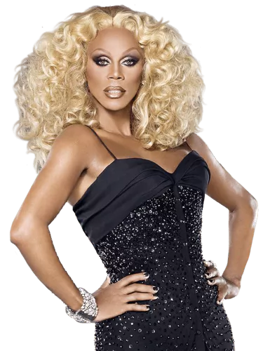

The
Wiki!


Hey squirrel friends! Mama Ru here! Despite my busy schedule,
I decided to make this wiki for my fans! Bet you didn't know that in
addition to my sewing, makeup, entrepreneurship, and performance
skills, I am also a web designer! It is my world, after all!
Anyway, if you have any questions, go ahead and consult this wiki
and its different pages, and I'm sure you will find what you need!
Also, I hate to disappoint my international fans, but I am a busy girl
after all. So, this wiki only covers the main seasons of Ru Paul's
Drag Race that occur in The United States. Muah!

I decided to make this wiki for my fans! Bet you didn't know that in
addition to my sewing, makeup, entrepreneurship, and performance
skills, I am also a web designer! It is my world, after all!
Anyway, if you have any questions, go ahead and consult this wiki
and its different pages, and I'm sure you will find what you need!
Also, I hate to disappoint my international fans, but I am a busy girl
after all. So, this wiki only covers the main seasons of Ru Paul's
Drag Race that occur in The United States. Muah!